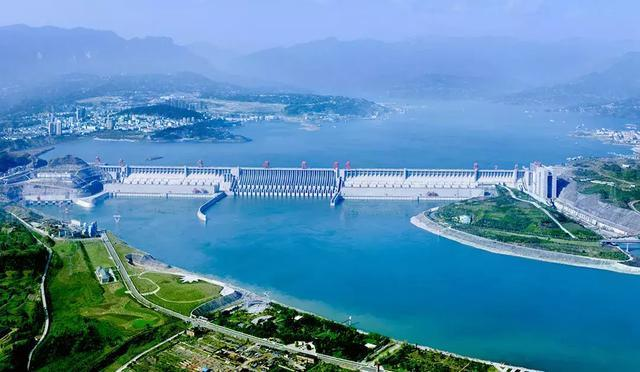
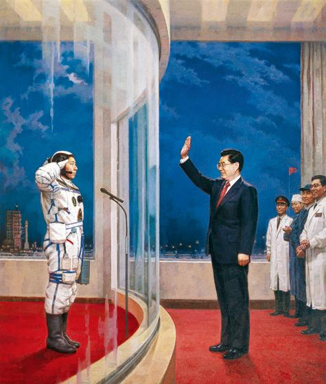
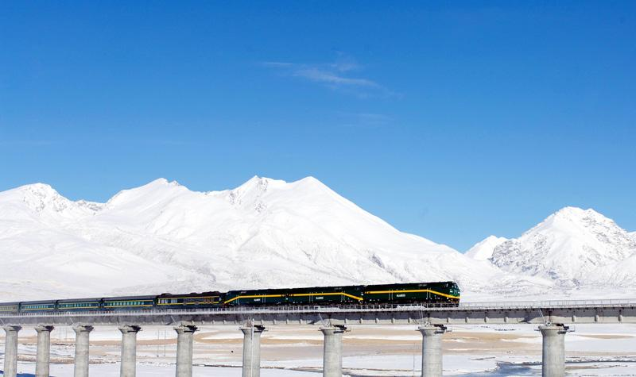
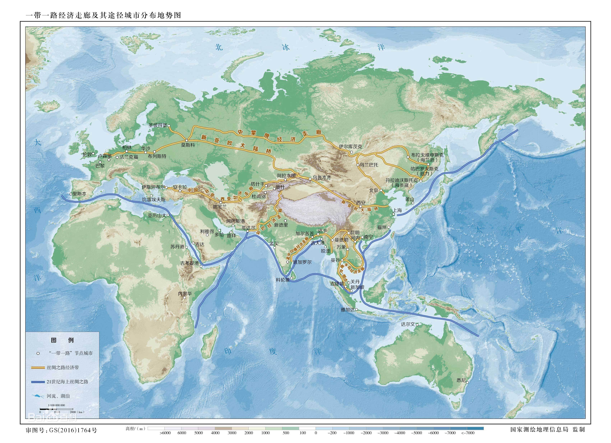
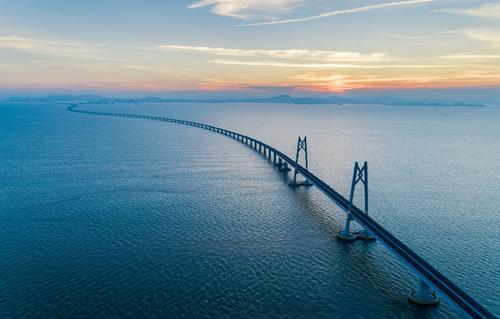
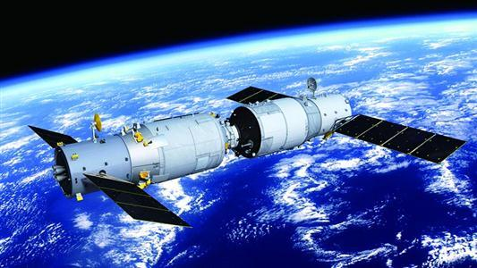
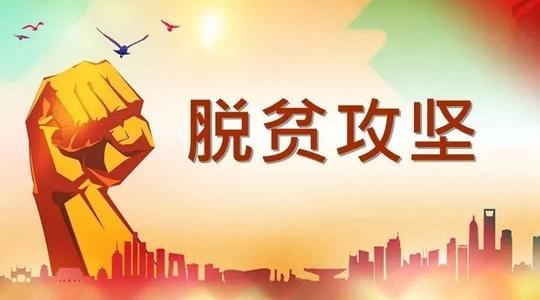

兴修水利，防治水患，历来是治国安邦的大事。长江流域洪涝灾害分布很广。清代以来，水害更趋频繁。1860年、1870年两次特大洪水，中下游平原损失惨重。1931年、1935年两次大洪水，使数十万人流离失所。1954年、1998年的特大洪水，人们还记忆犹新。无论是从人类生存还是发展的角度，治理长江都是刻不容缓的要务。
三峡工程凝聚着几代中国人的心血和智慧，研究论证所进行的工作量之浩大、听取意见之广泛、投入力量之雄厚，在世界工程史上堪称罕见。半个世纪的研究论证，充分体现了中国共产党人的科学求实精神，充分表明了三峡工程建设是民主、科学的决策。十年建设实践证明，兴建三峡工程是党中央三代领导集体的英明决策。
2003 年 10 月 15 日，
我国第一艘载人飞船“神舟五号”发射成功，中国人几千年的飞天梦想终成现实。中国成为继苏联/俄罗斯和美国之后世界上第三个将人类送入太空的国家，由此拉开了中国人探索太空的序幕。中国载人航天工程通过一次次任务的成功不断实现新的突破和超越。工程自立项实施以来，先后突破掌握天地往返、空间出舱、交会对接、航天员中期驻留、推进剂在轨补加等核心关键技术，成功组织实施15
次飞行任务，11 名（14 人次）航天员飞上太空并安全返回，取得了举世瞩目的辉煌成就， 充分彰显了伟大的中国道路、中国精神和中国力量。
青藏铁路的开通是我国的一项大国工程，它的开通，为中国西部的青海、西藏的社会发展带来了机遇。
建设青藏铁路，是中共中央、国务院从推进西部大开发、实现我国各民族共同繁荣发展的大局出发作出的一项重大决策。青藏铁路的建成扩大了铁路对西部地区的覆盖，强化了西部大开发的基础设施，为我国经济社会全面协调发展提供了运力保障，是落实科学发展观的一项重大成果。
传统全球化由海而起，由海而生，沿海地区、海洋国家先发展起来，陆上国家、内地则较落后，形成巨大的贫富差距。传统全球化由欧洲开辟，由美国发扬光大，形成国际秩序的“西方中心论”，导致东方从属于西方，农村从属于城市，陆地从属于海洋等一系列不平衡不合理效应。如今，“一带一路”正在推动全球再平衡。“一带一路”鼓励向西开放，带动西部开发以及中亚、蒙古等内陆国家和地区的开发，在国际社会推行全球化的包容性发展理念；同时，“一带一路”是中国主动向西推广中国优质产能和比较优势产业，将使沿途、沿岸国家首先获益，也改变了历史上中亚等丝绸之路沿途地带只是作为东西方贸易、文化交流的过道而成为发展“洼地”的面貌。这就超越了欧洲人所开创的全球化造成的贫富差距、地区发展不平衡，推动建立持久和平、普遍安全、共同繁荣的和谐世界。
港珠澳大桥是国家工程、国之重器，其建设创下多项世界之最，非常了不起，体现了一个国家逢山开路、遇水架桥的奋斗精神，体现了我国综合国力、自主创新能力，体现了勇创世界一流的民族志气。这是一座圆梦桥、同心桥、自信桥、复兴桥。大桥建成通车，进一步坚定了我们对中国特色社会主义的道路自信、理论自信、制度自信、文化自信，充分说明社会主义是干出来的，新时代也是干出来的！
港珠澳大桥建成通车，极大缩短香港、珠海和澳门三地间的时空距离；作为中国从桥梁大国走向桥梁强国的里程碑之作，该桥被业界誉为桥梁界的“珠穆朗玛峰”，被英媒《卫报》称为“现代世界七大奇迹”之一；不仅代表了中国桥梁先进水平，更是中国国家综合国力的体现。建设港珠澳大桥是中国中央政府支持香港、澳门和珠三角地区城市快速发展的一项重大举措，是“一国两制”下粤港澳密切合作的重大成果。
“天宫二号”称为“空间实验室”，是我国首个太空实验室平台。此前的“天宫一号”则是“目标飞行器”。“天宫二号”则是真正意义上的空间试验室。
“天宫二号” 搭载的实验项目达到了史无前例的 14 项，这些实验都属于当今世界最前沿的探索领域。“天宫二号” 是载人航天历次任务中应用项目最多的一次，它也即将成为我国“最忙碌”的空间实验室。
至此我国的航空航天正式进入了空间站时代
随着时间的推移，终于迎来脱贫攻坚战的最终胜利。全国脱贫攻坚总结表彰大会在2021年2月25日上午在北京人民大会堂隆重举行。“经过全党全国各族人民共同努力，在迎来中国共产党成立一百周年的重要时刻，我国脱贫攻坚战取得了全面胜利，现行标准下9899万农村贫困人口全部脱贫，832个贫困县全部摘帽，12.8万个贫困村全部出列，区域性整体贫困得到解决，完成了消除绝对贫困的艰巨任务，创造了又一个彪炳史册的人间奇迹！这是中国人民的伟大光荣，是中国共产党的伟大光荣，是中华民族的伟大光荣！”